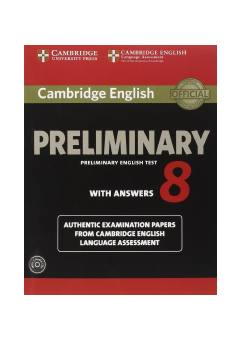

PEPET imtihoniga tayyorgarlik ko'rish uchun mo'ljallangan rasmiy testlar to'plami.
Ushbu kitob Cambridge English: Preliminary (PET) imtihoniga tayyorgarlik ko'rayotganlar uchun mo'ljallangan rasmiy test to'plamidir. Unda imtihon formatiga mos keluvchi to'rtta to'liq test varianti, javoblar kalitlari va tinglab tushunish hamda gapirish ko'nikmalarini rivojlantirish uchun materiallar keltirilgan.